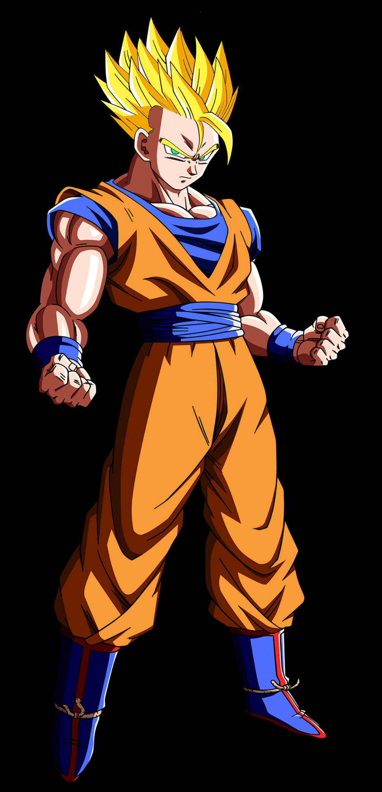

Gohan Niño

Gohan Niño es la primera etapa en la vida de Gohan. Es conocido por su dulzura y su inocencia. Aunque es un niño, posee un gran potencial de combate, heredado de su padre Goku.
Como niño, Gohan es conocido por su personalidad gentil y bondadosa, que resulta crucial en muchos momentos durante la serie. Uno de estos momentos incluye hacer amistad con un Namekiano llamado Dende, que más tarde demostró ser útil para curar a sus aliados durante las batallas contra los villanos de la serie.
Gohan Adolescente
Gohan Adolescente es una etapa crucial en la vida de Gohan. Durante esta época, Gohan entrena arduamente con Piccolo y aumenta su poder de combate significativamente.
Desde temprana edad, Gohan tuvo aptitudes innatas para la lucha debido a su sangre de saiyano, así como de un fácil entendimiento del Ki. De niño, tenía un Potencial Oculto, el cual solo se revelaba cuando experimentaba una rabia feroz, y cuando terminaba su furia, su poder se reduciría drásticamente.
Gohan Adulto
Gohan Adulto es la etapa en la que Gohan se convierte en un hombre. Aunque no entrena tanto como antes, sigue siendo un defensor de la Tierra y utiliza su poder cuando es necesario.
Posee los rasgos faciales de su padre, y su tono de piel es más similar al de su madre. También su musculatura es bastante desarrollada para su edad. Como adulto, mide 1,76 m de estatura y pesa 61 kg.
A medida que creció, entrenó duro y tuvo acceso a una gran parte de su poder, pero no fue hasta que se enfrentó a Cell Perfecto que el poder del joven Gohan estaba totalmente despierto y era capaz de utilizarlo a voluntad. Llega incluso a superar a su padre, transformándose en Supersaiyano 2 y salvar al mundo de Cell. Gohan es también el primero en lograr el Supersaiyano 2 tanto en el anime como en el manga. A pesar de no haber entrenado constantemente, Vegeta afirmó que Gohan era el número 1 en cuanto a potencial se refiere